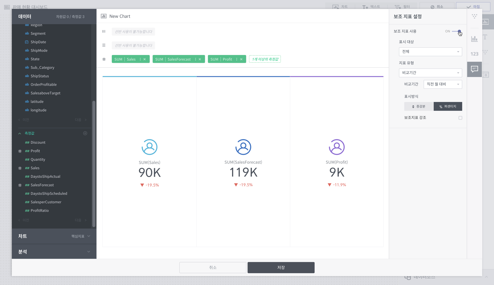
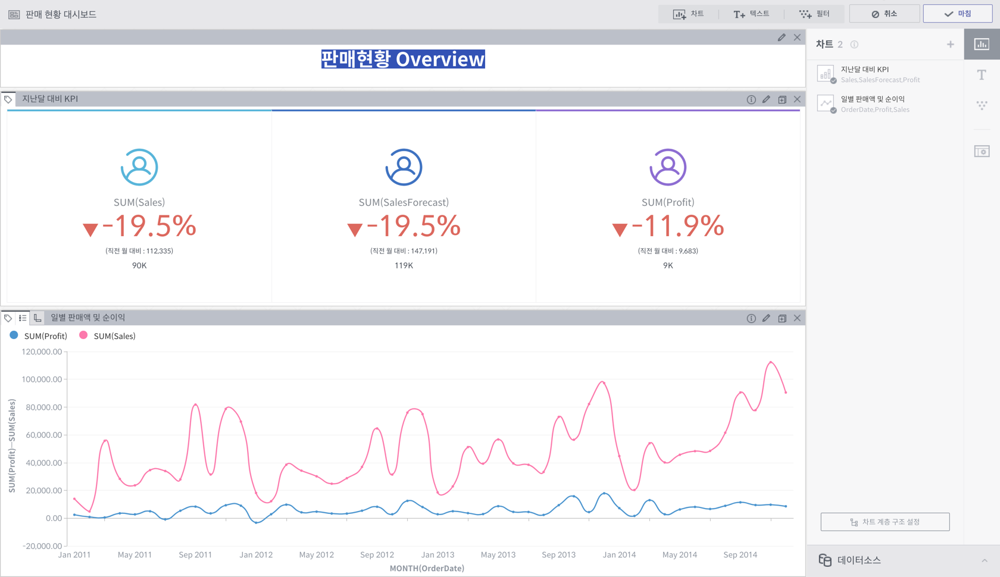

Step3. 대시보드 구성하기¶
마지막 단계는 빈 대시보드에 차트 위젯, 텍스트 위젯, 필터 위젯을 생성하여 대시보드를 구성하는 작업입니다. 대시보드 편집은 아래와 같은 순서로 진행됩니다.

이제 앞서 만든 판매현황 데이터를 이용해 아래와 같이 핵심지표 차트와 선형 차트를 그려 대시보드를 만들어보겠습니다.

빈 대시보드에서 차트 버튼을 눌러서 차트를 만들어봅시다.

핵심지표 차트 만들기¶
처음 만들어 볼 차트는 핵심지표(KPI) 차트입니다. 핵심지표 차트는 조직의 목표를 가장 직관적으로 보여주는 가장 단순하면서도 강력한 차트입니다. 우리가 만들 대시보드는 판매 현황을 잘 나타내는 것이 목표입니다. 따라서 총 판매액, 예상 총 판매액, 총 이익을 핵심지표 차트로 보여주려고 합니다. 어떻게 해야 할까요? 단순히 Sales, SalesForcast, Profit 세 개의 측정값 컬럼을 데이터 메뉴에서 클릭하세요. 이 작업을 피봇팅(pivoting)이라고 합니다. 피봇된 칼럼들은 자동으로 집계되어 선반에 올라갑니다. 컬럼을 선반에 올리면 즉시 알맞는 차트 종류가 추천됩니다. 추천된 핵심지표 차트를 클릭해 볼까요?

아래와 같이 핵심지표 차트가 만들어졌습니다. 조금 더 보기 좋게 만들기 위해서 우측의 차트 속성 메뉴를 이용해봅시다.

 을 눌러 공통 설정 패널에서 각 측정값 컬럼에 아이콘을 추가하고
을 눌러 공통 설정 패널에서 각 측정값 컬럼에 아이콘을 추가하고

 을 눌러 숫자 포멧 패널에서 소수점 표기 방식과 약어 표기 방식을 변경해주었습니다.
을 눌러 숫자 포멧 패널에서 소수점 표기 방식과 약어 표기 방식을 변경해주었습니다.

핵심지표 차트에서 특히 중요한 건 이전 대비 얼마나 성과가 있는지를 파악하는 것 입니다.  을 눌러 보조 지표 설정 패널에서 보조 지표를 설정하고 전월 대비 몇 %나 잘하고 있는지 확인해보겠습니다. 원한다면 원 지표 대신 보조 지표를 강조할 수도 있습니다.
을 눌러 보조 지표 설정 패널에서 보조 지표를 설정하고 전월 대비 몇 %나 잘하고 있는지 확인해보겠습니다. 원한다면 원 지표 대신 보조 지표를 강조할 수도 있습니다.

저장을 누르면 차트가 대시보드에 나타납니다.

선형 차트 만들기¶
그 다음으로 가장 기본적인 차트인 선형 차트를 그려보겠습니다. 시간에 따라 매출과 수익이 어떻게 변하는지 한 눈에 볼 수 있도록 해 볼까요? 다시 차트 버튼을 눌러 새 차트 그리기로 들어갑니다. OrderDate, Profit, Sales 컬럼을 눌러 시간 차원에 따라 값들이 변하는 모습을 보고자 합니다. 추천된 선형 차트를 클릭해보세요.

선형 차트가 그려졌습니다. 차트 속성창을 열어서 라인의 모양을 둥글게 변경해주었습니다.

지금은 OrderDate의 집계 단위가 시간이라 너무 데이터가 많습니다. 월 단위로 보기 위해서 선반에 올라간 OrderDate 컬럼의 메뉴에서 Granularity를 월(Month)로 선택해줍니다. 이제 모든 데이터가 보이네요! 우측 상단의 미니맵을 클릭해서 차트에서 미니맵을 제거해줍니다.

우측 메뉴에서  을 눌러 색상 설정 패널에서 색상 설정도 변경해줍니다.
을 눌러 색상 설정 패널에서 색상 설정도 변경해줍니다.

저장을 누르고 차트를 drag & drop하여 적절하게 위치를 바꿔주세요. 텍스트 위젯도 추가하여 대시보드에 적절한 정보를 추가합니다. 마침을 누르면 대시보드 편집이 완료됩니다.

본 튜토리얼을 통해 간단한 차트 두 가지를 완성해보았습니다. 대시보드는 인터랙티브하게 동작하여 차트를 선택하거나 필터를 추가하면 원하는 방식으로 프레젠테이션할 수 있습니다. 또 필요할 때마다 언제든지 차트를 수정하거나 추가·삭제할 수 있습니다.
이제 Metatron Discovery에 대해 더 알아보시겠어요?